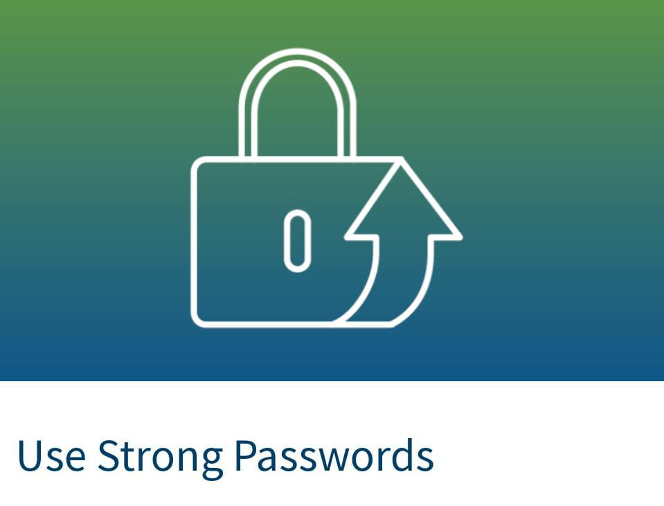
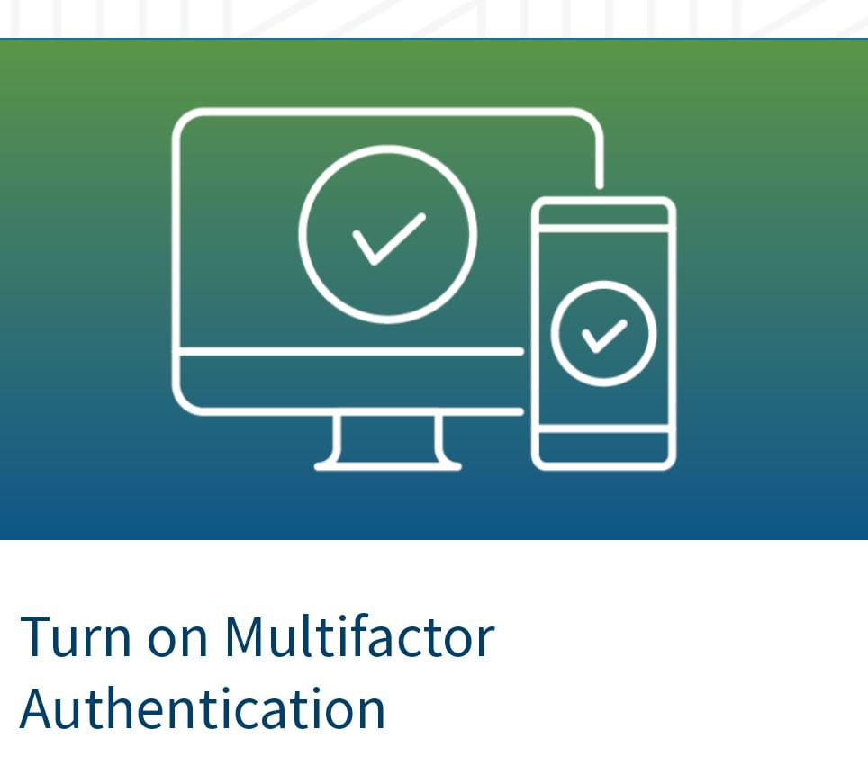

"Cybersecurity Essentials: Defending Your Digital Realm"
In today's interconnected world, cyber threats are always lurking, like digital shadows waiting to pounce. Just as you secure your physical home, safeguarding your online presence is vital. Here's a concise guide to fortify your digital fortress against cyber adversaries: Lock It Down with Strong Passwords Your password is your first line of defense. Craft unique codes with a mix of upper and lower-case letters, numbers, and symbols. Avoid easy-to-guess options like "123456." Consider using a trusted password manager for added security.  Keep Your Digital Guardians Vigilant Antivirus and antimalware software are your sentinels in the digital realm. Ensure they're up to date to tackle evolving cyber threats effectively. Master the Art of Safe Clicking Every click is a potential risk. Scrutinize links and attachments for legitimacy. Be cautious with email attachments, especially if they come from unknown sources. Cybercriminals often hide malicious payloads in innocent-looking files. Protect Your Precious Personal Information Information is gold in the world of cybercrime. Avoid oversharing on social media and be mindful when divulging personal details online. Cybercriminals can exploit this information for identity theft and targeted attacks. Double Up with Two-Factor Authentication (2FA) 2FA adds an extra layer of security to your accounts. Even if a cybercriminal cracks your password, they'll be thwarted without the second verification step. It's a simple yet potent way to enhance your online defenses.  In the digital age, the battle against cybercrime rages on. Implement these steps to fortify your defenses, safeguarding your digital life from unseen threats. It's not just about safety; it's about control and peace of mind in the virtual frontier. Stay vigilant, stay secure, and stay in control of your digital fortress.